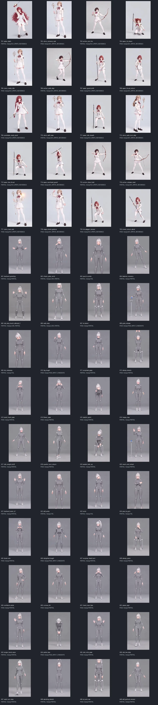

LTX 2.5 · 3–4초 초안 · 선택 결과 37 PASS / 23 PARTIAL
| 레인 | PASS | PARTIAL | 구성 |
|---|---|---|---|
| Avatar | 24 | 16 | A01–A40 |
| Arcane | 13 | 7 | T01–T20 |

샷별 영상 및 QA 자료는 기록된 workstation 출력 경로에 있습니다. 전체 샷·시도 인덱스 · 샷별 상태 · 자가 검수 결과 · 최종 요약
아바타는 회색 마커 슈트 프록시이며 정본 복장 승인이 아닙니다. Arcane CHAR-002는 후보 참조만 사용했습니다.